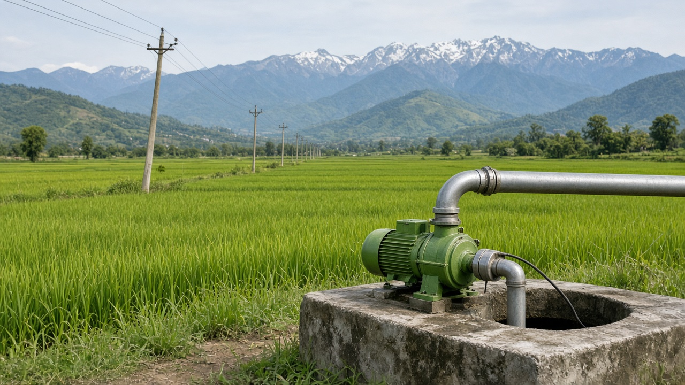
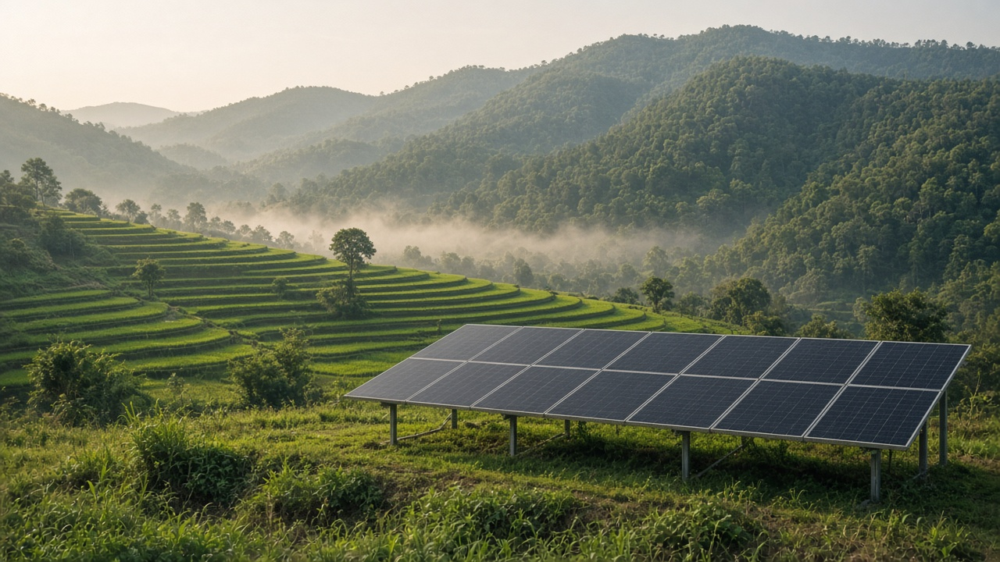
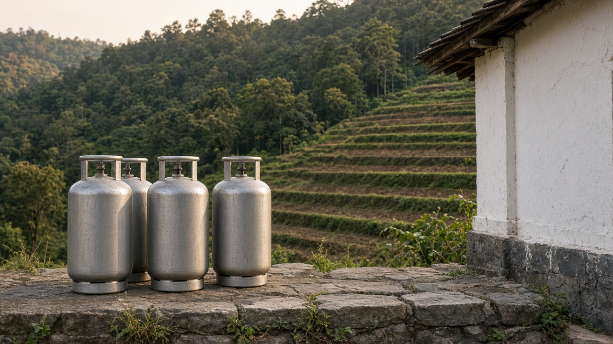

Subsidies, Incentives, and Harmful Subsidy Reform
Published on August 20, 2026

Governments use subsidies and tax breaks to lower the private cost of favored fuels, fertilizers, water, credit, or equipment. Some incentives accelerate clean technology when markets undervalue learning and network effects. Many others are environmentally harmful: underpriced diesel, free electricity for pumps that empty aquifers, cheap chemical fertilizer that loads rivers with nutrients, and support for inefficient mills. Reform is politically hard because the benefits are concentrated and visible while environmental costs are diffuse and delayed. Fiscal accounts often hide the true cost in utility losses and tax expenditures rather than a single budget line.
Good subsidy design is time-bound, targeted, and tied to performance. Feed-in prices, capital grants, and concessional loans should decline as costs fall, and they should not lock in one technology forever. Harmful subsidy reform works better when paired with compensation: cash transfers, lifeline tariffs, or support for affected workers, announced before prices rise. Transparency of who receives the cheap energy or input is the first analytical step, because incidence is rarely the same as the stated beneficiary. Sunset clauses and published phase-out calendars reduce the chance that a temporary incentive becomes a permanent rent.
Himalayan and South Asian economies illustrate the tension: cooking-gas and electricity support protect urban consumers, while irrigation and fertilizer support rural constituencies, yet both shape emissions, soils, and water tables. International diagnostics can measure the fiscal leak, but domestic coalitions decide whether prices move. Distinguishing a subsidy's stated purpose from its incidence—who actually receives the cheap energy, and what behavior it locks in—prevents cosmetic reform that only changes the name of the transfer. Removing a harmful subsidy is environmental policy even when the environment ministry is not in the room.

सरकारले मनपर्ने इन्धन, मल, पानी, कर्जा वा उपकरणको निजी लागत घटाउन अनुदान र कर छुट प्रयोग गर्छ। केही प्रोत्साहनले बजारले सिकाइ र सञ्जाल प्रभावको मूल्य कम आँक्दा सफा प्रविधि छिटो ल्याउँछन्। धेरै अरू वातावरणीय रूपमा हानिकारक हुन्छन्: सस्तो खनिज इन्धन, भूमिगत जल खाली गर्ने पम्पलाई निःशुल्क बिजुली, नदीमा पोषक हाल्ने सस्तो रासायनिक मल, र अदक्ष मिललाई सहयोग। सुधार राजनीतिक रूपमा गाह्रो छ किनभने लाभ केन्द्रित र देखिने हुन्छ, वातावरणीय लागत फैलिएको र ढिलो देखिन्छ। राजस्व खाताले प्रायः वास्तविक लागत उपयोगिता घाटा र कर खर्चमा लुकाउँछ, एउटा बजेट लाइनमा होइन।
राम्रो अनुदान रचना समयबद्ध, लक्षित र कार्यसम्पादनसँग जोडिएको हुन्छ। खरिद मूल्य, पूँजी अनुदान र सहुलियत ऋण लागत घट्दै जाँदा घट्नुपर्छ र एउटा प्रविधि सधैं थुन्नु हुँदैन। हानिकारक अनुदान सुधार क्षतिपूर्तिसँग जोडिँदा राम्रो चल्छ: नगद रकमान्तर, जीवनरेखा महसुल वा प्रभावित श्रमिक सहयोग, मूल्य बढ्नुअघि घोषणा। सस्तो ऊर्जा वा आगत कसले पाउँछ भन्ने पारदर्शिता पहिलो विश्लेषण चरण हो, किनभने वास्तविक प्रापक घोषित लाभार्थीसँग प्रायः मिल्दैन। अन्त्य खण्ड र प्रकाशित चरणबद्ध तालिकाले अस्थायी प्रोत्साहन स्थायी भाडा बन्न कम गर्छ।
हिमाली र दक्षिण एसियाली अर्थतन्त्रले तनाव देखाउँछन्: खाना पकाउने ग्यास र बिजुली सहयोगले सहरी उपभोक्ता जोगाउँछ, सिँचाइ र मल सहयोगले ग्रामीण मत जोगाउँछ, तर दुवैले उत्सर्जन, माटो र जल सतह आकार दिन्छ। अन्तर्राष्ट्रिय निदानले राजस्व चुहावट नाप्न सक्छ, मूल्य सर्छ कि भन्ने घरेलु गठबन्धनले तय गर्छ। अनुदानको घोषित उद्देश्य र वास्तविक प्रापक छुट्याउँदा नाम मात्र बदलिने सुधार रोकिन्छ। वातावरण मन्त्रालय कोठामा नहुँदा पनि हानिकारक अनुदान हटाउनु वातावरण नीति हो।

सरकारें पसंदीदा ईंधन, उर्वरक, जल, ऋण या उपकरण की निजी लागत घटाने के लिए अनुदान और कर छूट प्रयोग करती हैं। कुछ प्रोत्साहन बाज़ार के सीख और जाल प्रभाव का कम मूल्यांकन करने पर स्वच्छ प्रौद्योगिकी तेज़ लाते हैं। कई अन्य पर्यावरण की दृष्टि से हानिकारक हैं: सस्ता खनिज ईंधन, भूजल खाली करने वाले पंपों को मुफ्त बिजली, नदियों में पोषक डालने वाला सस्ता रासायनिक उर्वरक, और अक्षम मिलों को सहारा। सुधार राजनीतिक रूप से कठिन है क्योंकि लाभ केंद्रित और दिखने वाले होते हैं, पर्यावरण लागत फैली और देर से दिखती है। राजकोषीय खाते अक्सर वास्तविक लागत उपयोगिता घाटे और कर व्यय में छिपाते हैं, एक बजट पंक्ति में नहीं।
अच्छा अनुदान रचना समयबद्ध, लक्षित और प्रदर्शन से जुड़ा होता है। खरीद मूल्य, पूँजी अनुदान और रियायती ऋण लागत घटने पर घटने चाहिए और एक प्रौद्योगिकी हमेशा नहीं बाँधनी चाहिए। हानिकारक अनुदान सुधार मुआवजे से जुड़ने पर बेहतर चलता है: नकद अंतरण, जीवनरेखा दर या प्रभावित श्रमिक सहयोग, मूल्य बढ़ने से पहले घोषित। सस्ती ऊर्जा या आगत कौन पाता है यह पारदर्शिता पहला विश्लेषण कदम है, क्योंकि वास्तविक प्रापक घोषित लाभार्थी से अक्सर भिन्न होता है। समाप्ति खंड और प्रकाशित चरणबद्ध पंचांग अस्थायी प्रोत्साहन को स्थायी भाड़ा बनने से घटाते हैं।
हिमालयी और दक्षिण एशियाई अर्थव्यवस्थाएँ तनाव दिखाती हैं: खाना पकाने की गैस और बिजली सहयोग शहरी उपभोक्ता बचाते हैं, सिंचाई और उर्वरक सहयोग ग्रामीण मत क्षेत्र, फिर भी दोनों उत्सर्जन, मिट्टी और जल स्तर गढ़ते हैं। अंतरराष्ट्रीय निदान राजकोषीय रिसाव माप सकते हैं, मूल्य सरकेगा या नहीं घरेलू गठबंधन तय करता है। अनुदान के घोषित उद्देश्य और वास्तविक प्रापक अलग करने से केवल नाम बदलने वाला सुधार रुकता है। पर्यावरण मंत्रालय कमरे में न हो तब भी हानिकारक अनुदान हटाना पर्यावरण नीति है।